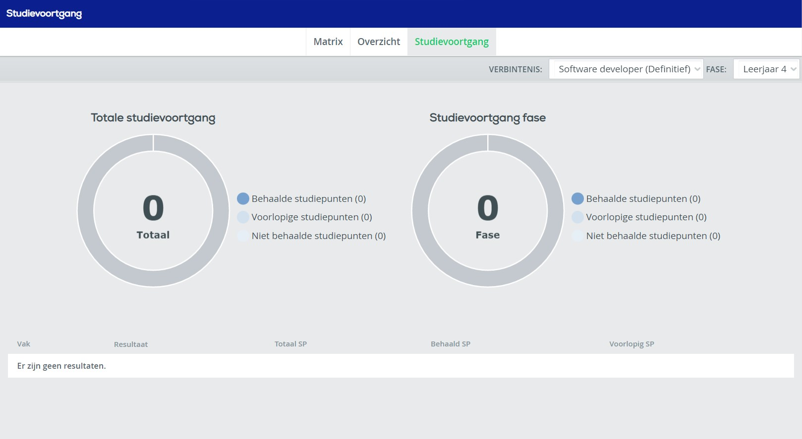

Wat is EduArte?
Zoals de meeste scholen in de 21e eeuw gebruikt ook Techniek College Rotterdam een online programma waarin leerlingen en ouders het rooster, cijfers en aanwezigheid kunnen zien.
Het rooster
EduArte wordt voornamelijk gebruikt om het rooster te bekijken.
- TCR locatie
- Docent
- Vak
- Tijd
- Lokaal
- Klas
Per lesuur kan je volgende informatie zien:
Op TCR is 1 lesuur gelijk aan een halfuur. Dat betekend dat als je een les van een uur hebt dat in EduArte 2 lesuren is.
Dit wordt gebruikt omdat sommige uren langer dan een uur kunnen duren en het is dan makkelijk om niet halve lesuren te moeten gebruiken.
Resultaten
EduArte kan ook worden gebruikt om shoolresultaten te zien. Dit werkt alleen als docenten hier gebruik van maken en de cijfers erin zetten.
Tot nu hebben wij persoonlijk nog geen cijfers gekregen die hierin stonden. Onze docenten zetten cijfers vaker bij de individuele opdrachten in Team of Canvas.
Ondanks dat wij er geen gebruik van maken heeft EduArte resultaten in theorie hele mooie functies zoals een mooi overzicht van behaalde studiepunten.
Zoals op de afbeelding is te zien is er een cirkel waarin je duidelijk kan zien hoeveel studiepunten wel of niet zijn behaald.
Aanwezigheid
EduArte wordt door docenten gebruikt om de aanwezigheid van leerlingen door te geven. Leerlingen kunnen hierin ook hun eigen gemelde aanwezigheid te zien.